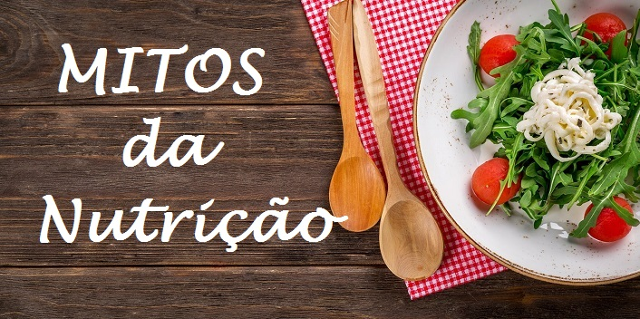
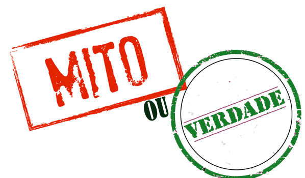

10 Mitos sobre dieta saudável que devem ser questionados

Mito 1:
Adoçantes não causam aumento de peso
Os adoçantes, em si, podem não conter calorias, mas o nosso cérebro
ainda assim os percebe como se fossem doces, de modo que o apetite é
ativado com o seu consumo. Como resultado, um refrigerante simples pode
levá-lo a devorar três sanduíches.
Mito 2:
Dietas líquidas ajudam a reduzir o volume do estômago
O estômago se estende quando comemos e depois se encolhe novamente.
A sua redução definitiva só ocorre por meio de uma intervenção cirúrgica.
As dietas apenas ajudam a acostumar a consumir uma menor quantidade de alimentos.
Mito 3:
Para o deleite de todos os gulosos, não é bem assim.
Pesquisas recentes mostraram que a silhueta é afetada principalmente pela quantidade de alimento
consumido e seu valor calórico muito mais do que por causa dos carboidratos, em si. Portanto, as
dietas com base em carboidratos, com pouca gordura e teor calórico adequado, podem ser muito eficazes.

Mito 4:
Se você jantar um copo de água com 2 colheres de sopa de vinagre de maçã, vai perder peso
Uma balela sem a menor comprovação científica. O senso comum nos diz que se você jantar apenas um copo de água, mesmo que não
tenha vinagre, seu peso obviamente deve baixar. Além disso, algumas colheres de sopa de vinagre diariamente podem causar outro
efeito mágico muito diferente: pioram qualquer doença gastrointestinal.
Mito 5:
Toranja, abacaxi e aipo queimam gordura. Não há produtos que possam queimar gordura,
este é outro mito. É verdade que o abacaxi contém uma enzima chamada bromelina, responsável por destruir proteínas. Portanto,
os abacaxis ajudam a “amolecer” a carne e a acelerar a digestão.
Mito 6:
O azeite é uma espécie de poção mágica para o organismo
Sim, no contexto da chamada Dieta Mediterrânea, o azeite é super benéfico. Mas não se deve atribuir a ele um caráter mágico. Embora possua antiooxidantes,
o que também é positivo, o azeite de oliva continua sendo óleo, o que significa que contém gorduras. Pertence à categoria de produtos de alta caloria: mais de 800 kcal a
cada 100 gramas. Portanto, consuma com bom senso e moderação.
Mito 7:
Existem produtos com calorias negativas, cuja digestão requer mais calorias do que eles contêm
Na verdade, o aipo, o rabanete e algumas outras hortaliças consumidas cruas são um verdadeiro achado para incluir em qualquer dieta, pois podem ser consumidos
sem nenhum risco para a silhueta. No entanto, seu conteúdo calórico tende mais para zero, já que na sua digestão são gastas as mesmas calorias que esses alimentos
proporcionam. Tentar “neutralizar” metade de uma torta consumida com a ajuda de um punhado de aipo é inútil. O conteúdo calórico não vai ser modificado por isso.
Mito 8:
O chá verde contribui para a perda de peso
Isso só será verdade se você for trabalhar em uma plantação para coletar folhas de chá. Na realidade, qualquer chá ajudará por
um tempo a tirar o apetite e o chá verde, como o vinho tinto, contém polifenóis que neutralizam o colesterol e ajudam nossos vasos
sanguíneos a continuarem saudáveis por mais tempo. Mas, sozinho, o produto não faz ninguém emagrecer.
Mito 9:
O peixe é um produto dietético, contém menos gordura do que qualquer carne vermelha
Sim e não. Tudo depende do tipo de peixe que você acabar colocando no prato. As variedades gordurosas, como o salmão ou a
truta, contêm mais gordura do que a vitela. Mas o peixe também é rico em ácidos graxos e ômega-3, que são benéficos para todo o
sistema nervoso e reduzem o risco de doença cardíaca.
Mito 10:
Todos os iogurtes são benéficos para a saúde
Esta afirmação é verdadeira apenas para os iogurtes “vivos”, não pasteurizados: aqueles que não foram submetidos a um tratamento
térmico. Esses iogurtes podem ser armazenados apenas por uma semana, por isso vale a pena examinar a embalagem.